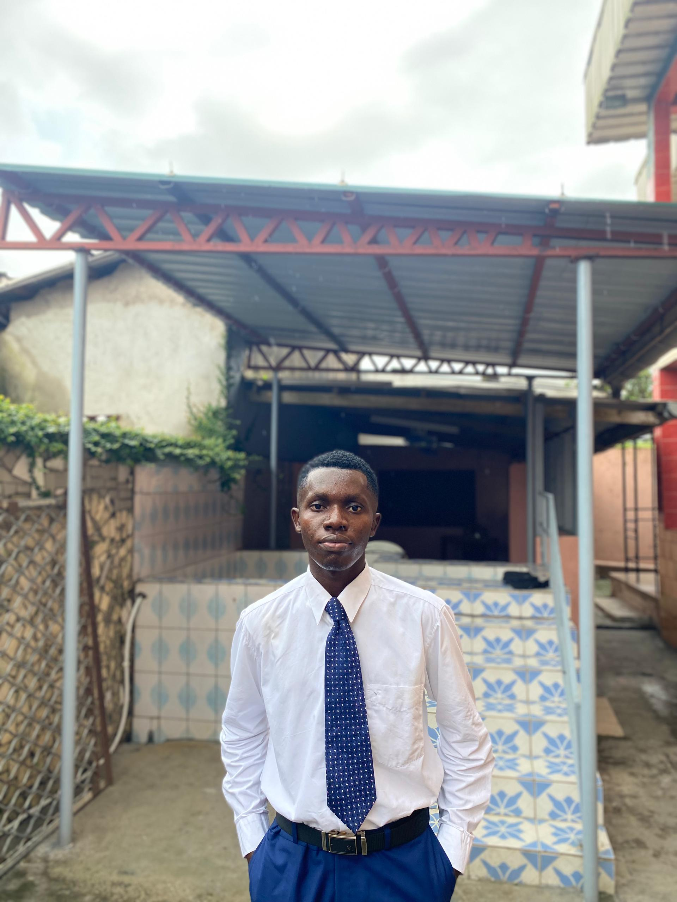

WDD 131 - Dynamic Web Fundamentals Favour Junior Uche Ebere
About Me
My name is Favour Junior Uche Ebere I was bron in Cameroon but both my parents are Nigerians, I come from a family of seven children and i am the midddle kid. I love playing basketball,watch movies and spending time with my family. I am looking forward to a great semester and learn new incredible thing.
Lagos,Nigeria
official flag of nigeria
Lagos is also among the top ten of the world's fastest-growing cities and urban areas. A megacity, it has the fourth-highest GDP in Africa, and houses one of the largest and busiest seaports on the continent. Due to the large urban population and port traffic volumes, Lagos is classified as a Medium-Port Megacity.